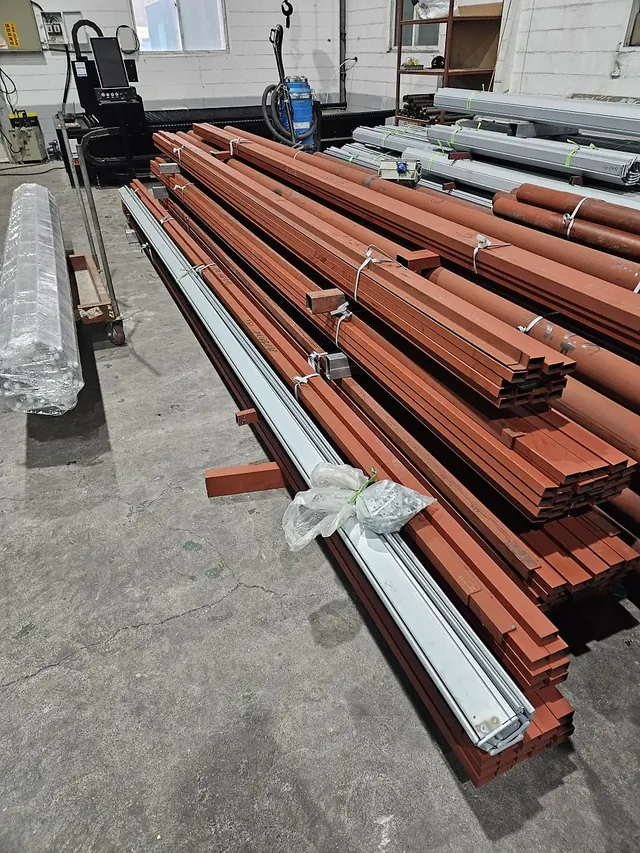
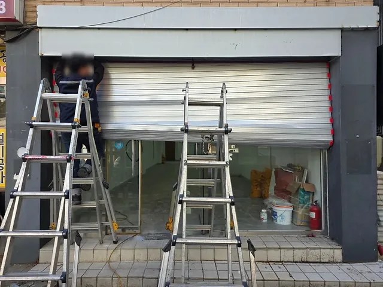
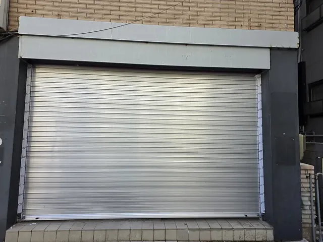

방화셔터 제조 · 경기도 광주 자체 공장1997년부터 셔터 한 길
불길은
막고,
현장엔 맞게.
강판을 자르고 접어 슬랫까지 한 공장에서 만듭니다. KICT 품질인정 방화셔터부터 상가 셔터, 슬랫 몇 장 자재 납품까지.
대표전화 · 영업일 08:00~17:00031-764-9573


1997셔터 한 길
KICT 2종방화셔터 품질인정
300여최근 3년 현장
전국납품 · 시공
어떤
현장인가요?
제품 이름을 몰라도 괜찮습니다. 현장 종류를 고르면 맞는 제품부터 안내합니다.